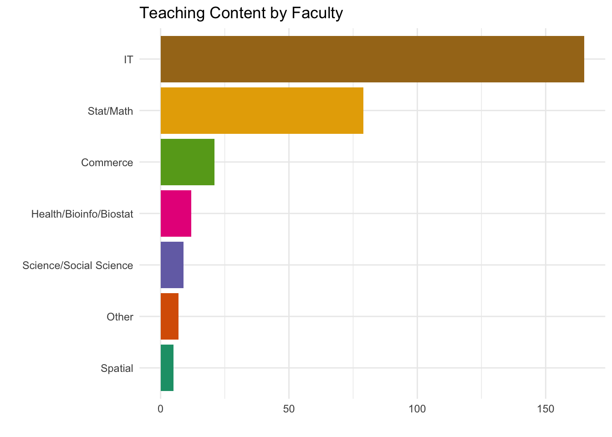
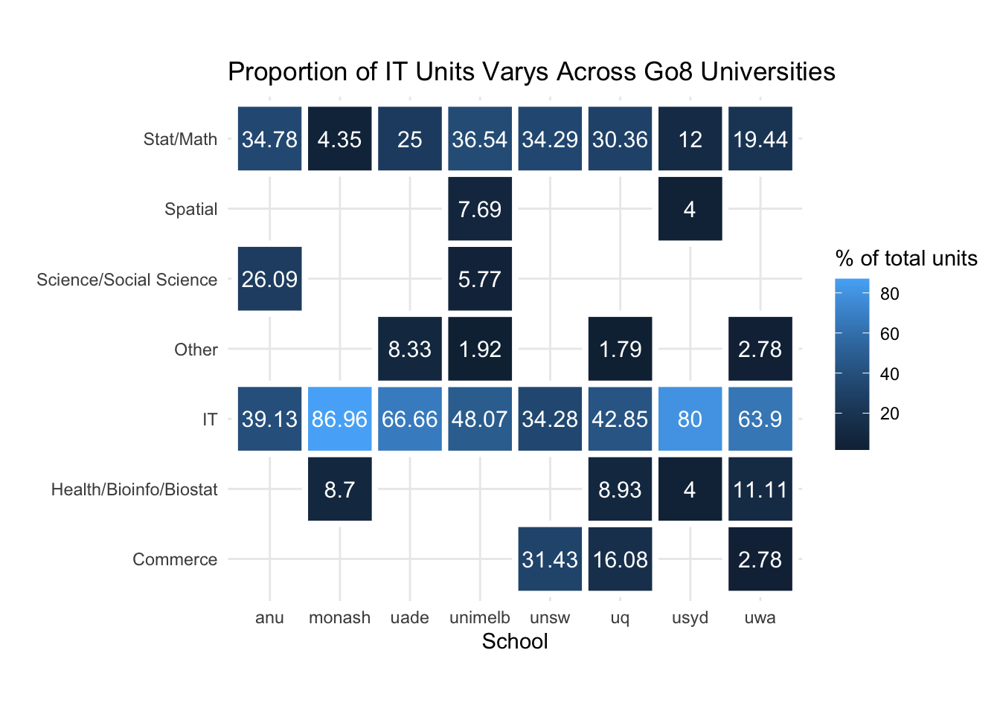
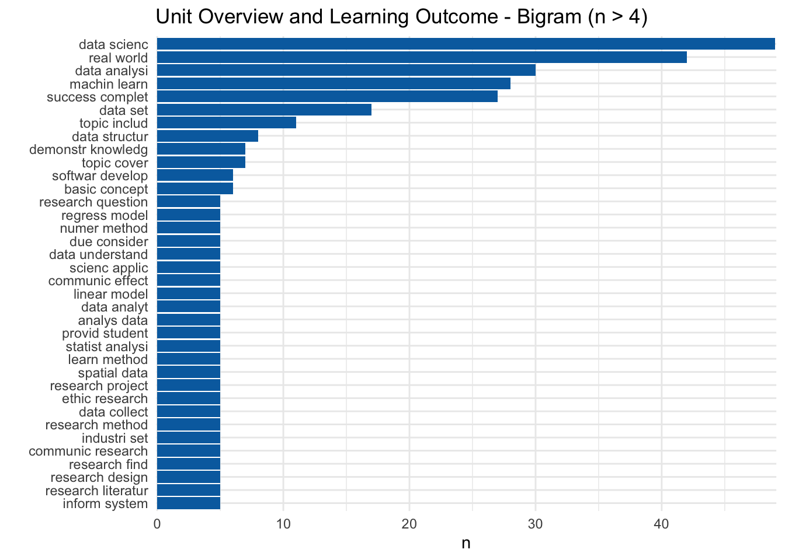

Unit Text Analysis
Faculty Unit Code Analysis
To explore the teaching contents of Master of Data Science at Go8, an analysis based on faculty of units offered is conducted to see what components are included in this degree.
Unfortunately faculty information is not directly available on the unit handbooks, in this case, unit code is taken as a surrogate identification. As shown in the sample data below, unit code is a combination of letters and numbers, the first few characters such as FIT, MAT, usually represents the faculty this unit belongs to, we could then make relatively educated assumptions on the content of the unit.
| School | Course | Unit | Unit_code |
|---|---|---|---|
| monash | Master of Data Science | FIT9132 - Introduction to databases | FIT9132 |
| monash | Master of Data Science | FIT9136 - Algorithms and programming foundations in Python | FIT9136 |
| monash | Master of Data Science | FIT9137 - Introduction to computer architecture and networks | FIT9137 |
| monash | Master of Data Science | MAT9004 - Mathematical foundations for data science and AI | MAT9004 |
| monash | Master of Data Science | FIT5125 - IT research methods | FIT5125 |
| monash | Master of Data Science | FIT5145 - Introduction to data science | FIT5145 |
| monash | Master of Data Science | FIT5147 - Data exploration and visualisation | FIT5147 |
| monash | Master of Data Science | FIT5196 - Data wrangling | FIT5196 |
| monash | Master of Data Science | FIT5197 - Statistical data modelling | FIT5197 |
| monash | Master of Data Science | FIT5149 - Applied data analysis | FIT5149 |
| monash | Master of Data Science | FIT5201 - Machine learning | FIT5201 |
| monash | Master of Data Science | FIT5202 - Data processing for big data | FIT5202 |
| monash | Master of Data Science | FIT5205 - Data in society | FIT5205 |
| monash | Master of Data Science | FIT5212 - Data analysis for semi-structured data | FIT5212 |
| monash | Master of Data Science | FIT5230 - Malicious AI | FIT5230 |
| monash | Master of Data Science | BMS5021 - Introduction to Bioinformatics | BMS5021 |
| monash | Master of Data Science | BMS5022 - Advanced bioinformatics: efficient genome, transcriptome and proteome analysis | BMS5022 |
| monash | Master of Data Science | FIT5126 - Masters thesis part 1 | FIT5126 |
| monash | Master of Data Science | FIT5127 - Masters thesis part 2 | FIT5127 |
| monash | Master of Data Science | FIT5228 - Masters thesis part 3 | FIT5228 |
| monash | Master of Data Science | FIT5229 - Masters thesis final | FIT5229 |
| monash | Master of Data Science | FIT5120 - Industry experience studio project | FIT5120 |
| monash | Master of Data Science | FIT5122 - Professional practice | FIT5122 |
| unimelb | Master of Data Science | Methods of Mathematical Statistics | MAST90105 |
| unimelb | Master of Data Science | A First Course In Statistical Learning | MAST90104 |
| unimelb | Master of Data Science | Programming and Software Development | COMP90041 |
| unimelb | Master of Data Science | Algorithms and Complexity | COMP90038 |
| unimelb | Master of Data Science | Elements of Data Processing | COMP20008 |
| unimelb | Master of Data Science | Database Systems & Information Modelling | INFO90002 |
| unimelb | Master of Data Science | Statistical Modelling for Data Science | MAST90139 |
| unimelb | Master of Data Science | Multivariate Statistics for Data Science | MAST90138 |
| unimelb | Master of Data Science | Computational Statistics & Data Science | MAST90083 |
| unimelb | Master of Data Science | Cluster and Cloud Computing | COMP90024 |
| unimelb | Master of Data Science | Advanced Database Systems | COMP90050 |
| unimelb | Master of Data Science | Statistical Machine Learning | COMP90051 |
| unimelb | Master of Data Science | Data Science Project Pt1 | MAST90106 |
| unimelb | Master of Data Science | Data Science Project Pt2 | MAST90107 |
| unimelb | Master of Data Science | Data Science Research Project Pt1 | MAST90108 |
| unimelb | Master of Data Science | Data Science Research Project Pt2 | MAST90109 |
| unimelb | Master of Data Science | Foundations of Spatial Information | GEOM90008 |
| unimelb | Master of Data Science | Spatial Databases | GEOM90018 |
| unimelb | Master of Data Science | Spatial Analysis | GEOM90006 |
| unimelb | Master of Data Science | Information Visualisation | GEOM90007 |
| unimelb | Master of Data Science | Analysis of High-Dimensional Data | MAST90110 |
| unimelb | Master of Data Science | Advanced Statistical Modelling | MAST90111 |
| unimelb | Master of Data Science | Mathematics of Risk | MAST90051 |
| unimelb | Master of Data Science | Optimisation for Industry | MAST90014 |
| unimelb | Master of Data Science | Practice of Statistics & Data Science | MAST90027 |
| unimelb | Master of Data Science | Stochastic Calculus with Applications | MAST90059 |
| unimelb | Master of Data Science | Advanced Probability | MAST90081 |
| unimelb | Master of Data Science | Random Processes | MAST90019 |
| unimelb | Master of Data Science | Bayesian Statistical Learning | MAST90125 |
| unimelb | Master of Data Science | Mathematical Statistics | MAST90082 |
| unimelb | Master of Data Science | AI Planning for Autonomy | COMP90054 |
| unimelb | Master of Data Science | Advanced Theoretical Computer Science | COMP90057 |
| unimelb | Master of Data Science | Algorithms for Bioinformatics | COMP90014 |
| unimelb | Master of Data Science | Computational Genomics | COMP90016 |
| unimelb | Master of Data Science | Constraint Programming | COMP90046 |
| unimelb | Master of Data Science | Cryptography and Security | COMP90043 |
| unimelb | Master of Data Science | Declarative Programming | COMP90048 |
| unimelb | Master of Data Science | Distributed Algorithms | COMP90020 |
| unimelb | Master of Data Science | Distributed Systems | COMP90015 |
| unimelb | Master of Data Science | Internet Technologies | COMP90007 |
| unimelb | Master of Data Science | Mobile Computing Systems Programming | COMP90018 |
| unimelb | Master of Data Science | Parallel and Multicore Computing | COMP90025 |
| unimelb | Master of Data Science | Programming Language Implementation | COMP90045 |
| unimelb | Master of Data Science | Natural Language Processing | COMP90042 |
| unimelb | Master of Data Science | Stream Computing and Applications | COMP90056 |
| unimelb | Master of Data Science | Knowledge Management Systems | ISYS90035 |
| unimelb | Master of Data Science | Security Analytics | COMP90073 |
| unimelb | Master of Data Science | Computer Vision | COMP90086 |
| unimelb | Master of Data Science | The Ethics of Artificial Intelligence | COMP90087 |
| unimelb | Master of Data Science | Science in Schools | EDUC90839 |
| unimelb | Master of Data Science | Science and Technology Internship | SCIE90017 |
| unimelb | Master of Data Science | Communicating Science at Work | SCIE90034 |
| usyd | Master of Data Science | Visual Analytics | COMP5048 |
| usyd | Master of Data Science | Principles of Data Science | COMP5310 |
| usyd | Master of Data Science | Machine Learning and Data Mining | COMP5318 |
| usyd | Master of Data Science | Computational Statistical Methods | STAT5003 |
| usyd | Master of Data Science | Data Science Capstone Project | DATA5703 |
| usyd | Master of Data Science | Data Science Capstone A | DATA5707 |
| usyd | Master of Data Science | Data Science Capstone B | DATA5708 |
| usyd | Master of Data Science | Data Science Capstone Project - Individual | DATA5709 |
| usyd | Master of Data Science | Natural Language Processing | COMP5046 |
| usyd | Master of Data Science | Advanced Machine Learning | COMP5328 |
| usyd | Master of Data Science | Deep Learning | COMP5329 |
| usyd | Master of Data Science | Advanced Data Models | COMP5338 |
| usyd | Master of Data Science | Cloud Computing | COMP5349 |
| usyd | Master of Data Science | Multimedia Retrieval | COMP5425 |
| usyd | Master of Data Science | Data Analytics and Business Intelligence | INFO5060 |
| usyd | Master of Data Science | Information Security Management | INFO5301 |
| usyd | Master of Data Science | Statistical Learning and Data Mining | QBUS6810 |
| usyd | Master of Data Science | Predictive Analytics | QBUS6840 |
| usyd | Master of Data Science | Introduction to Complex Systems | CSYS5010 |
| usyd | Master of Data Science | Data Analysis in the Social Sciences | DATA5207 |
| usyd | Master of Data Science | Evaluating Learning Tech. Innovation | EDPC5012 |
| usyd | Master of Data Science | Learning Technology Research Frontiers | EDPC5025 |
| usyd | Master of Data Science | Applied Healthcare Data Science | HTIN5005 |
| usyd | Master of Data Science | Applied GIS and Spatial Data Analytics | ITLS6107 |
| usyd | Master of Data Science | Environmental Footprints and IO Analysis | PHYS5033 |
| uq | Master of Data Science | Introduction to Data Science | DATA7001 |
| uq | Master of Data Science | Responsible Data Science | DATA7002 |
| uq | Master of Data Science | Data Analytics at Scale | DATA7201 |
| uq | Master of Data Science | Statistical Methods for Data Science | DATA7202 |
| uq | Master of Data Science | Machine Learning for Data Scientists | DATA7703 |
| uq | Master of Data Science | Machine Learning | COMP7703 |
| uq | Master of Data Science | Data Science Capstone Project 1 | DATA7901 |
| uq | Master of Data Science | Data Science Capstone Project 2 | DATA7902 |
| uq | Master of Data Science | Data Science Capstone Project 2B | DATA7903 |
| uq | Master of Data Science | Introduction to Software Engineering | CSSE7030 |
| uq | Master of Data Science | Advanced Database Systems | INFS3200 |
| uq | Master of Data Science | Database Principles | INFS7901 |
| uq | Master of Data Science | Mathematics for Data Science 1 | MATH7501 |
| uq | Master of Data Science | Mathematics for Data Science 2 | MATH7502 |
| uq | Master of Data Science | Probability Models & Data Analysis | STAT7203 |
| uq | Master of Data Science | Data Mining | INFS7203 |
| uq | Master of Data Science | Advanced Techniques for High Dimensional Data | INFS7205 |
| uq | Master of Data Science | Information Retrieval and Web Search | INFS7410 |
| uq | Master of Data Science | Social Media Analytics | INFS7450 |
| uq | Master of Data Science | Numerical Linear Algebra & Optimisation | MATH3204 |
| uq | Master of Data Science | Further Topics in Operations Research | MATH7202 |
| uq | Master of Data Science | Operations Research & Mathematical Planning | MATH7232 |
| uq | Master of Data Science | Statistical Learning | STAT3006 |
| uq | Master of Data Science | Accounting | ACCT7101 |
| uq | Master of Data Science | Bioinformatics 1: Introduction | BINF6000 |
| uq | Master of Data Science | Introduction to Proteins & Nucleic Acids | BINF6001 |
| uq | Master of Data Science | Bioinformatics 2: Development & Research | BINF7000 |
| uq | Master of Data Science | Advanced Genome Informatics | BINF7001 |
| uq | Master of Data Science | Artificial Intelligence | COMP3702 |
| uq | Master of Data Science | Pattern Recognition and Analysis | COMP3710 |
| uq | Master of Data Science | Digital Health Software Project | COMP3820 |
| uq | Master of Data Science | Advanced Algorithms & Data Structures | COMP7500 |
| uq | Master of Data Science | Algorithms & Data Structures | COMP7505 |
| uq | Master of Data Science | Numerical Methods in Computational Science | COSC7500 |
| uq | Master of Data Science | High-Performance Computing | COSC7502 |
| uq | Master of Data Science | Advanced Software Engineering | CSSE7023 |
| uq | Master of Data Science | Design Thinking | DECO7110 |
| uq | Master of Data Science | Elements of Econometrics | ECON7310 |
| uq | Master of Data Science | Applied Econometrics for Macroeconomics and Finance | ECON7350 |
| uq | Master of Data Science | Financial Econometrics | ECON7390 |
| uq | Master of Data Science | Finance | FINM7401 |
| uq | Master of Data Science | Portfolio Management | FINM7403 |
| uq | Master of Data Science | Financial Mathematics | MATH7039 |
| uq | Master of Data Science | Computation in Financial Mathematics | MATH7049 |
| uq | Master of Data Science | Financial Calculus | MATH7091 |
| uq | Master of Data Science | Fundamentals of Marketing | MKTG7501 |
| uq | Master of Data Science | Consumer & Buyer Behaviour | MKTG7503 |
| uq | Master of Data Science | Market & Consumer Research | MKTG7510 |
| uq | Master of Data Science | Introduction to Epidemiology | PUBH7600 |
| uq | Master of Data Science | Deep Learning | STAT3007 |
| uq | Master of Data Science | Mathematical Statistics | STAT7301 |
| uq | Master of Data Science | Probability Models & Stochastic Processes | STAT7304 |
| uq | Master of Data Science | Statistical Analysis of Genetic Data | STAT7306 |
| uq | Master of Data Science | Advanced Probability & Stochastic Processes I | STAT7504 |
| uq | Master of Data Science | Advanced Probability & Stochastic Processes II | STAT7505 |
| uq | Master of Data Science | Longitudinal & Correlated Data | STAT7610 |
| uade | Master of Data Science (MDS) | Foundations of Computer Science A | COMP SCI 7210 |
| uade | Master of Data Science (MDS) | Foundations of Computer Science B | COMP SCI 7211 |
| uade | Master of Data Science (MDS) | Mathematical Foundations of Data Science | MATHS 7027 |
| uade | Master of Data Science (MDS) | Data Taming | MATHS 7107 |
| uade | Master of Data Science (MDS) | Data Science PG | STATS 7022 |
| uade | Master of Data Science (MDS) | Decision Science PG | APP MTH 7124 |
| uade | Master of Data Science (MDS) | Human and Ethical Factors in Computer Science | COMP SCI 7212 |
| uade | Master of Data Science (MDS) | Introduction to Statistical Machine Learning | COMP SCI 7314 |
| uade | Master of Data Science (MDS) | Deep Learning Fundamentals | COMP SCI 7318 |
| uade | Master of Data Science (MDS) | Applied Machine Learning | COMP SCI 7416 |
| uade | Master of Data Science (MDS) | Internship | ENG 7111 |
| uade | Master of Data Science (MDS) | Probability & Statistics PG | MATHS 7103 |
| uade | Master of Data Science (MDS) | Data Literacy | MATHS 7105 |
| uade | Master of Data Science (MDS) | Specialised Programming | COMP SCI 7007 |
| uade | Master of Data Science (MDS) | Artificial Intelligence | COMP SCI 7059 |
| uade | Master of Data Science (MDS) | Distributed Systems | COMP SCI 7076 |
| uade | Master of Data Science (MDS) | Systems Programming | COMP SCI 7088 |
| uade | Master of Data Science (MDS) | Algorithm & Data Structure Analysis | COMP SCI 7201 |
| uade | Master of Data Science (MDS) | Programming and Computational Thinking for Data Science | COMP SCI 7208 |
| uade | Master of Data Science (MDS) | Big Data Analysis and Project | COMP SCI 7209 |
| uade | Master of Data Science (MDS) | Parallel and Distributed Computing | COMP SCI 7305 |
| uade | Master of Data Science (MDS) | Mining Big Data | COMP SCI 7306 |
| uade | Master of Data Science (MDS) | Using Machine Learning Tools PG | COMP SCI 7317 |
| uade | Master of Data Science (MDS) | Advanced Algorithms | COMP SCI 7407 |
| uade | Master of Data Science (MDS) | Applied Natural Language Processing | COMP SCI 7417 |
| uade | Master of Data Science (MDS) | Machine Learning and Artificial Intelligence | PHIL 7005 |
| uade | Master of Data Science (MDS) | Statistical Modelling | STATS 7054 |
| uade | Master of Data Science (MDS) | Statistical Modelling and Inference | STATS 7107 |
| uade | Master of Data Science (MDS) | Data Science Research Project Part A | MATHS 7097A |
| uade | Master of Data Science (MDS) | Data Science Research Project Part B | MATHS 7097B |
| uade | Master of Data Science (MDS) | Data Science Industry Project Part A | MATHS 7098A |
| uade | Master of Data Science (MDS) | Data Science Industry Project Part B | MATHS 7098B |
| uade | Master of Data Science (Applied) [Online] (MDS(App)) | Foundations of Computer Science - Python A | COMP SCI 7210OL |
| uade | Master of Data Science (Applied) [Online] (MDS(App)) | Foundations of Computer Science - Python B | COMP SCI 7211OL |
| uade | Master of Data Science (Applied) [Online] (MDS(App)) | Decision Sciences | APP MTH 7201OL |
| uade | Master of Data Science (Applied) [Online] (MDS(App)) | Business Data & Cyber Security (M) | COMMGMT 7023OL |
| uade | Master of Data Science (Applied) [Online] (MDS(App)) | Human and Ethical Factors in Computer Science | COMP SCI 7212OL |
| uade | Master of Data Science (Applied) [Online] (MDS(App)) | Using Machine Learning Tools PG | COMP SCI 7317OL |
| uade | Master of Data Science (Applied) [Online] (MDS(App)) | Big Data Analysis & Industry Project | COMP SCI 7319OL |
| uade | Master of Data Science (Applied) [Online] (MDS(App)) | Research Methods | COMP SCI 7415OL |
| uade | Master of Data Science (Applied) [Online] (MDS(App)) | Data Taming, Modelling and Visualisation | DATA 7201OL |
| uade | Master of Data Science (Applied) [Online] (MDS(App)) | Applied Data Science | DATA 7202OL |
| uade | Master of Data Science (Applied) [Online] (MDS(App)) | Working with Big Data | DATA 7203OL |
| uade | Master of Data Science (Applied) [Online] (MDS(App)) | Applications of Data Science | DATA 7301OL |
| uade | Master of Data Science (Applied) [Online] (MDS(App)) | Real Data: Modern Methods for Finding Hidden Patterns | DATA 7302OL |
| uade | Master of Data Science (Applied) [Online] (MDS(App)) | Mathematical Foundations of Data Science | MATHS 7027OL |
| uade | Master of Data Science (Applied) [Online] (MDS(App)) | Data Science Research Project | DATA 7303AOL |
| uade | Master of Data Science (Applied) [Online] (MDS(App)) | Data Science Research Project B | DATA 7303BOL |
| anu | Master of Applied Data Analytics | Data Mining | COMP8410 |
| anu | Master of Applied Data Analytics | Data Wrangling | COMP8430 |
| anu | Master of Applied Data Analytics | Introduction to Social Science Methods and Types of Data | SOCR8201 |
| anu | Master of Applied Data Analytics | Using Data to Answer Policy Questions and Evaluate Policy | SOCR8202 |
| anu | Master of Applied Data Analytics | Regression Modelling | STAT6038 |
| anu | Master of Applied Data Analytics | Generalised Linear Models | STAT7030 |
| anu | Master of Applied Data Analytics | Graphical Data Analysis | STAT7026 |
| anu | Master of Applied Data Analytics | Introductory Statistics for Business and Finance | STAT7055 |
| anu | Master of Applied Data Analytics | Relational Databases | COMP6240 |
| anu | Master of Applied Data Analytics | Introduction to Database Concepts | COMP7240 |
| anu | Master of Applied Data Analytics | Programming for Scientists | COMP6730 |
| anu | Master of Applied Data Analytics | Introduction to Programming for Data Scientists | COMP7230 |
| anu | Master of Applied Data Analytics | Document Analysis | COMP6490 |
| anu | Master of Applied Data Analytics | Neural Networks, Deep Learning and Bio-inspired Computing | COMP8420 |
| anu | Master of Applied Data Analytics | Statistical Machine Learning | COMP8600 |
| anu | Master of Applied Data Analytics | Social Research Practice | SOCR8082 |
| anu | Master of Applied Data Analytics | Online Research Methods | SOCR8006 |
| anu | Master of Applied Data Analytics | Advanced Techniques in the Creation of Social Science Data | SOCR8203 |
| anu | Master of Applied Data Analytics | Advanced Social Science Approaches to Inform Policy Development and Service Delivery | SOCR8204 |
| anu | Master of Applied Data Analytics | Introduction to Bayesian Data Analysis | STAT7016 |
| anu | Master of Applied Data Analytics | Principles of Mathematical Statistics | STAT6039 |
| anu | Master of Applied Data Analytics | Statistical Learning | STAT7040 |
| anu | Master of Applied Data Analytics | Applied Time Series Analysis | STAT8002 |
| uwa | Master of Data Science | Computational Thinking with Python | CITS1401 |
| uwa | Master of Data Science | Relational Database Management Systems | CITS1402 |
| uwa | Master of Data Science | Analysis of Experiments | STAT2401 |
| uwa | Master of Data Science | Analysis of Observations | STAT2402 |
| uwa | Master of Data Science | Computational Data Analysis | CITS4009 |
| uwa | Master of Data Science | Natural Language Processing | CITS4012 |
| uwa | Master of Data Science | Open Source Tools and Scripting | CITS4407 |
| uwa | Master of Data Science | Data Warehousing | CITS5504 |
| uwa | Master of Data Science | Machine Learning | CITS5508 |
| uwa | Master of Data Science | Data Science Capstone Project | CITS5553 |
| uwa | Master of Data Science | Applied Predictive Modelling | STAT4064 |
| uwa | Master of Data Science | Bayesian Computing and Statistics | STAT4066 |
| uwa | Master of Data Science | Data Storytelling | BUSN5003 |
| uwa | Master of Data Science | Computer Vision | CITS4402 |
| uwa | Master of Data Science | Computational Modelling | CITS4403 |
| uwa | Master of Data Science | Artificial Intelligence and Adaptive Systems | CITS4404 |
| uwa | Master of Data Science | Mobile and Wireless Computing | CITS4419 |
| uwa | Master of Data Science | Data Science Research Project Part 1 | CITS5011 |
| uwa | Master of Data Science | Data Science Research Project Part 2 | CITS5012 |
| uwa | Master of Data Science | Data Science Research Project Part 1 | CITS5014 |
| uwa | Master of Data Science | Data Science Research Project Part 2 | CITS5015 |
| uwa | Master of Data Science | Cloud Computing | CITS5503 |
| uwa | Master of Data Science | Agile Web Development | CITS5505 |
| uwa | Master of Data Science | The Internet of Things | CITS5506 |
| uwa | Master of Data Science | High Performance Computing | CITS5507 |
| uwa | Master of Data Science | Project Management and Engineering Practice | GENG5505 |
| uwa | Master of Data Science | Business Intelligence | INMT5526 |
| uwa | Master of Data Science | Data Analysis and Decision Making | MGMT5504 |
| uwa | Master of Data Science | Quantum Information and Computing | PHYS4021 |
| uwa | Master of Data Science | Biostatistics I | PUBH4401 |
| uwa | Master of Data Science | Biostatistics II | PUBH5769 |
| uwa | Master of Data Science | Analysis of Linked Health Data | PUBH5785 |
| uwa | Master of Data Science | Advanced Analysis of Linked Health Data | PUBH5802 |
| uwa | Master of Data Science | Computationally Intensive Methods in Statistics | STAT4063 |
| uwa | Master of Data Science | Multilevel and Mixed-Effects Modelling | STAT4065 |
| uwa | Master of Data Science | Statistical Data Science | STAT5061 |
| unsw | Master of Data Science and Decisions | Foundations of Computer Science | COMP9020 |
| unsw | Master of Data Science and Decisions | Principles of Programming | COMP9021 |
| unsw | Master of Data Science and Decisions | Machine Learning and Data Mining | COMP9417 |
| unsw | Master of Data Science and Decisions | Information Retrieval and Web Search | COMP6714 |
| unsw | Master of Data Science and Decisions | Big Data Management | COMP9313 |
| unsw | Master of Data Science and Decisions | Statistical Machine Learning for Risk and Actuarial Applications | ACTL3142 |
| unsw | Master of Data Science and Decisions | Financial Econometrics | ECON5206 |
| unsw | Master of Data Science and Decisions | Industrial Organisation | ECON5321 |
| unsw | Master of Data Science and Decisions | Behavioural Economics | ECON5324 |
| unsw | Master of Data Science and Decisions | Policy Evaluation Methods | ECON6202 |
| unsw | Master of Data Science and Decisions | Health Economics | ECON6307 |
| unsw | Master of Data Science and Decisions | Financial Technology | FINS5548 |
| unsw | Master of Data Science and Decisions | Introduction to Business Analytics | INFS5700 |
| unsw | Master of Data Science and Decisions | Information Systems Consulting | INFS5831 |
| unsw | Master of Data Science and Decisions | Marketing Analytics Tools | MARK5822 |
| unsw | Master of Data Science and Decisions | Optimization | MATH5165 |
| unsw | Master of Data Science and Decisions | Linear and Discrete Optimization Modelling | MATH5171 |
| unsw | Master of Data Science and Decisions | Graph Theory | MATH5425 |
| unsw | Master of Data Science and Decisions | Applied Regression Analysis | MATH5806 |
| unsw | Master of Data Science and Decisions | Data Mining and its Business Applications | MATH5836 |
| unsw | Master of Data Science and Decisions | Time Series | MATH5845 |
| unsw | Master of Data Science and Decisions | Nonparametric Statistics | MATH5895 |
| unsw | Master of Data Science and Decisions | Categorical Data Analysis | MATH5945 |
| unsw | Master of Data Science and Decisions | Bayesian Inference and Computation | MATH5960 |
| unsw | Master of Data Science and Decisions | Policy Applications of Behavioural Economics | ECON6312 |
| unsw | Master of Data Science and Decisions | Public Economics and Regulation | ECON6313 |
| unsw | Master of Data Science and Decisions | Database Systems | COMP9311 |
| unsw | Master of Data Science and Decisions | Data Visualisation | DATA5002 |
| unsw | Master of Data Science and Decisions | Data Science and Decisions Project A | DATA5011 |
| unsw | Master of Data Science and Decisions | Data Science and Decisions Project B | DATA5012 |
| unsw | Master of Data Science and Decisions | Fundamentals of Data Science | DATA9001 |
| unsw | Master of Data Science and Decisions | Business Economics | ECON5103 |
| unsw | Master of Data Science and Decisions | Economics of Strategy | ECON5111 |
| unsw | Master of Data Science and Decisions | Multivariate Analysis | MATH5855 |
| unsw | Master of Data Science and Decisions | Statistical Inference | MATH5905 |
The grouping was performed manually using the code listed below. We made certain choices though it should be noted that the grouping is not 100% accurate. For example, the code ‘DATA’ from the University of Sydney is all classified under IT, however, some of the units that start with DATA are taught by the faculty in the School of Mathematics and Statistics (based on personal knowledge), which means ‘DATA’ belongs to multiple departments. Although there would be misclassified units, the results could still provide a meaningful guidance regarding the teaching components of Master of Data Science at Go8 universities.
math <- c("STAT", "MATH", "MATHS", "STATS", "MAT", "MAST", "ACTL", "QBUS")
it <- c("COMP", "FIT", "CITS", "INFS", "COSC", "CSSE", "CSYS", "EDPC", "INMT", "PHIL", "PHYS", "BUSN","DATA", "INFO", "INFS")
commerce <- c("ECON", "FINS", "MARK", "ACCT", "FINM", "MGMT", "MKTG")
spatial <- c("GEOM", "ITLS")
science <- c("EDUC", "SCIE", "SOCR")
health <- c("BINF", "BMS", "HTIN", "PUBH")It is clear from Figure 1 that IT and Stat/Math are the two dominating components in the Master of Data Science degrees at Go8. Most units (165 out of 298) fall under the IT faculty, followed by Math and Stats, which has 79 units.

Similar findings could be observed from some but not all Go8 universities. Figure 2 shows a heat map of the faculty breakdown by university. Since the total number of units offered by each university is different, instead of showing the actual number, proportions are plotted to make better comparisons across universities.

Lighter colour represents higher proportion, it is obvious that at Monash University (monash), University of Adelaide (Uuade), University of Sydney (usyd) and University of Western Australia (uwa), units from IT faculty occupies more than 50% of the total units offered, especially at Monash University, the proportion of IT units nearly reaches 87%.
On the other hand, University of Melbourne (unimelb) and University of Queensland (uq) offers relatively higher proportion of statistical and mathematical (Stat/Math) units, almost the same percentage as IT units. Whereas units offered at the Australian National University (anu) and UNSW Sydney (unsw) are more evenly distributed across IT, Stat/Math, Science/Social Science and Commerce respectively.
In addition, it is also clear that units offered at University of Melbourne (unimelb), University of Queensland (uq) and University of Western Australia (uwa) covers five out of eight categories, which implies the Master of Data Science degrees at these three universities provide more varieties in terms of units offered.
Based on the findings above, it seems that there is a shared structure across Go8 that Master of Data Science is a IT based, computational degree, but the proportion it occupies varies by universities. Monash University tends to be heavily focused on IT and computational aspects, whereas the Master of Data Science degree at UNSW Sydney and ANU are more balanced across IT, statistics and math, as well as science and commerce.
Unit Overview and Learning Outcome - Bigram
After having a rough idea of the bigger picture, we then moved to explore what exactly are the teaching contents. We pre-processed text from learning outcome and unit overview to produce single word analysis, bigram, and tirgram. Words and terms such as ‘student’, ‘successful completion’ add more noises than values to the results, are removed in the pre-processing step.
The bigram, shown in Figure 3 below provides the most informative results among the n-gram analysis. Machine learning (machin learn) appears quite often, as well as software development (softwar develop), linear model, statistical analysis (statist analysi), spatial data. It seems that these frequently mentioned terms are associated with both computational and statistical concepts and skills, which aligns with the findings from the unit code analysis in previous section.

Unfortunately, due to the limited number of observations in the collected data set, the count for each term is too low to make meaningful interpretations or justifications. In addition, similar terms such as research findings, research designs and research literature are supposed to be grouped and counted together, but are not in the bigram. This issue is later solved by introducing the topic modeling technique for natural language processing, which will be discussed in Topic Modelling section.